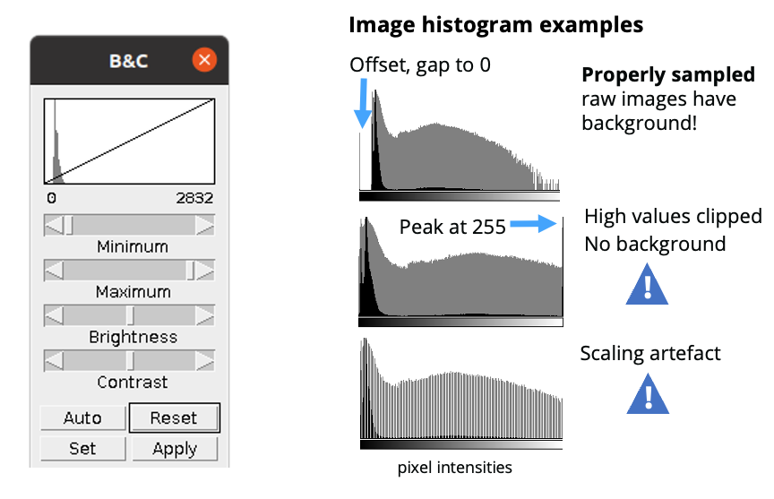
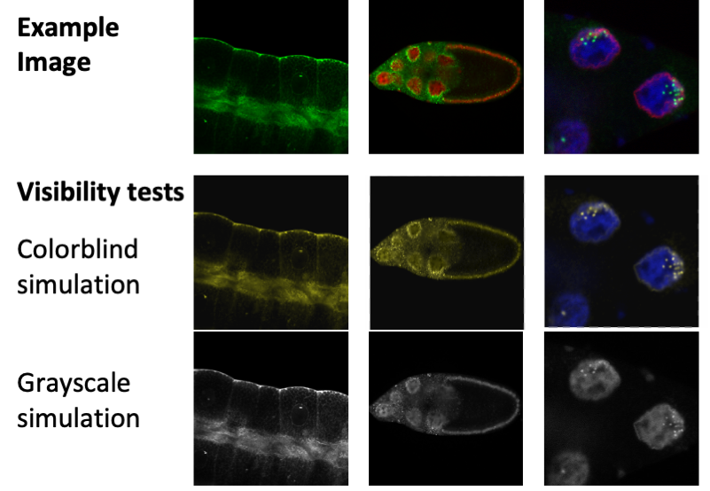
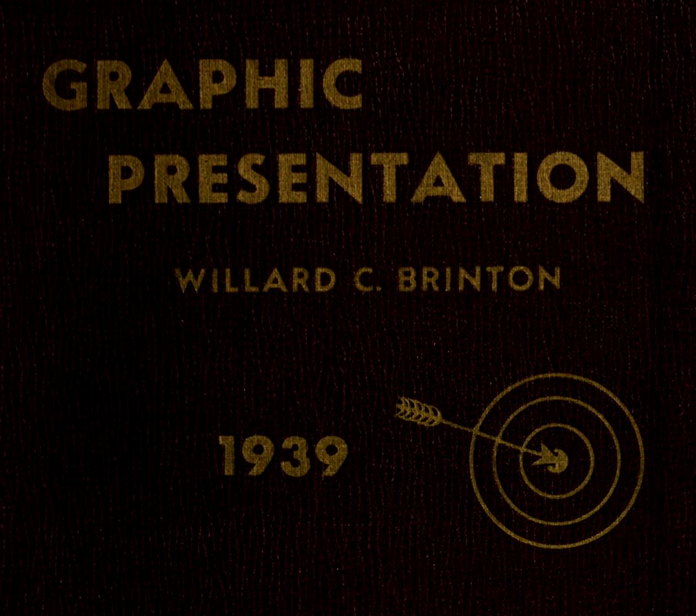
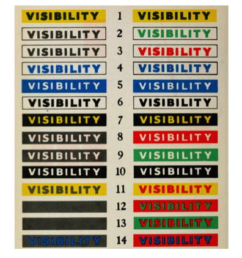

How to… image colors
Images come in many appearances. Photos, histology staining, and some clinical image are usually not color adjusted and shown in full color. Electron microscopy images show one layer of information and are shown in greyscale. In light microscopy images we can excite features in several different wavelengths and combine them in multi-colored images. And this is where trouble starts (more on trouble in my overview. I already wrote about color annotation, today I focus on the image colors.
Adjust brightness & contrast
For each channel, brightness and contrast can be adjusted separately. When images are to be compared, fixed intensity values should be used. Adjustment can be done in linear mode, which is applied uniformly to the whole image [note: if you are really into image display details there is much more to learn for you here, monitor display are not uniform, different algorithms are “linear” in different ways etc. If this is critical for your image analysis, learn more. If not, stop here and move on with your science].

Select color display
The vast majority of light microscope cameras capture each emission spectrum as a separate greyscale image. Users then often select a display color (‘lookup table’) for each channel. Many times users simply pick the color of the emission wavelengths. DAPI peaks at 461 nm and is then shown in blue, GFP peaks at 509 nm, which is in the green portion of the visible spectrum, and RFP peaks at 583 nm,hence is shown as red.
Visibiilty of colors
The problem is that blue or red on the black background of microscopy images have a much lower visibility than the original greyscale image. We can see much more fine details when the signal is shown in white on black, as in the original greyscale image. You thus serve your audiences best if you show microscope images in greyscale also in your figures

Accessibility of colors
When we prepare figures we should also consider color-blind audiences. Problems to differentiate red/green, as is the case in deuteranopia, is well known, but also other combinations may be problematic. Online software and also ImageJ allow you to test color combinations for their visibility to diverse audiences. In general: you may find possibilities to combine two channels in color-blind save mode. It is however impossible to find color options for three or more channels. Thus your safest option is again to show each color channel with a separate greyscale image.

Why are we still debating color choices?
In all forms of science communication, including image preparation, authors should be considered of colorblind readers. Among data scientists, it is well established for at least over a century that red and green colors should not be used in parallel when communicating data.
W.C. Brinton already wrote about this topic in his books in 1914 and 1939 (Chapter 49 “Color and its use”), citing an even older article by Edward Ayers from 1907, that “One man in twenty and one women in about two hundred are unable to see red and green normally” (Brintons book is available online).
Surprisingly, being considerate with color choices still not reached all: a widely shared technology feature in Nature (Katsnelson, 2021, Colour me better: fixing figures for colour blindness) again calls for authors to use inclusive colors. Also this is echoed by many scientific societies e.g., the American Society for Cell Biology.


More on color combinations
How exactly colors can be combined and still be accessible to all readers is controversial. For some images, such as colored photographs, rendering them safe for viewing by colorblind readers is not possible and risks sacrificing clarity. But, as pointed out above, adjusting the display colors is simple for most light microscopy images. Here, colors are selected in the microscope or image processing software. Many already offer combinations of color that are accessible to most colorblind audiences. Currently, many scientists already embraced green/magenta as a color scheme to replace green/red images. However, this may pose a semantic problem, when referring to red-fluorophores depicted in magenta color etc, or a convention problem to others, who feel “Green Fluorescent Protein” should not be shown in e.g., cyan. In light of these semantic and convention obstacles, scientists should embrace publishing each channel of a multicolored light microscope image as a standalone, separate (greyscale) image. Grayscale images are in any case superior to discern fine image details such as specific structures or cells in images. Human eyes perceive the contrast between light and dark areas more easily than they do contrast between a color and dark areas, e.g. as is the case when showing intensities in green on a dark background.
Literature on colors in microscopy
A Review of Color Blindness for Microscopists: Guidelines and Tools for Accommodating and Coping with Color Vision Deficiency.
Keene, D.R., 2015, Microscopy and Microanalysis
Tools and resources for color choices
- Design color palettes & test accessibilityHCLwizard
- Find color palettes for chartsColorBrewer2
- Blog on Viz for Colorblind readersDatylon blog
- Tableau blog on red/greenTableau blog